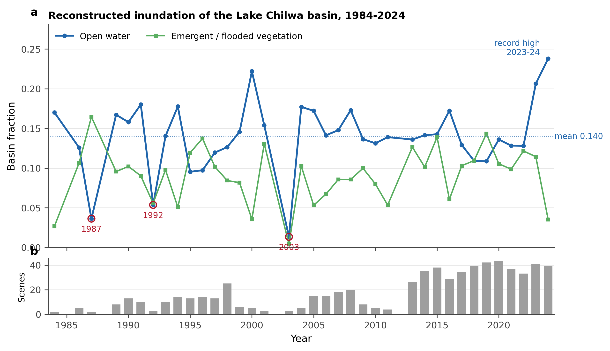
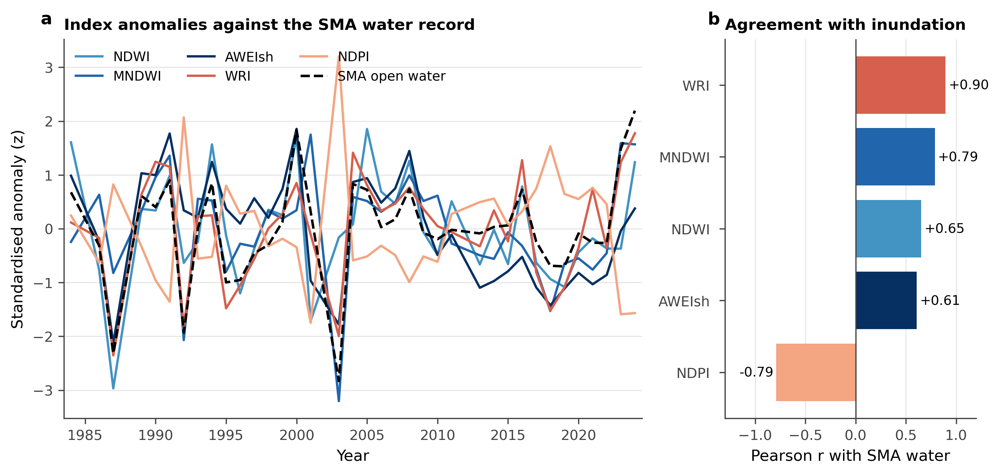
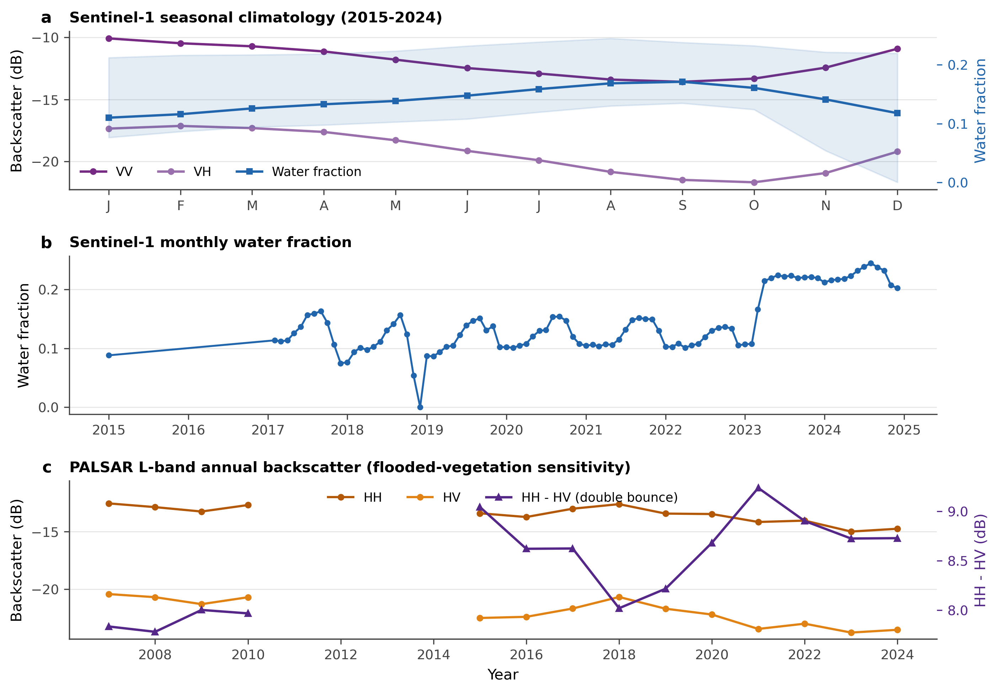

Results
3.1 Water Extent Dynamics
The spectral mixture analysis resolves the basin’s inundation at sub-pixel scale across the Landsat record, thirty-seven usable years between 1984 and 2024 (Figure 1). Basin-mean open-water fraction averaged 0.140 and reached its maximum of 0.238 in 2024, the wettest year in the series and among the best sampled, at an inter-annual coefficient of variation of 0.32. Three principal recession troughs punctuate the record, in 1987, 1992, and 2003, each a year when open water covered less than a tenth of the basin. Those values, 0.013 in 2003 and 0.036 in 1987, rest on three and two usable scenes and are better read as evidence of severe drawdown than as precise extents. The deepest well-sampled low is 1995, at 0.095 from thirteen scenes, which coincides with the near-total desiccation of the central basin documented by Njaya et al. (2011).
Scaled to the 8,752 km² catchment, these fractions give a sub-pixel open-water extent averaging 1,230 km² and running from 2,083 km² in 2024 to 835 km² in 1995, two fifths of peak extent. Integrating the fraction rasters pixel by pixel, with each pixel weighted by its true area on the ellipsoid, returns 1,829 km² for 2023 against the 1,806 km² the basin-mean fraction implies, so the two routes to extent agree to within about one per cent. The combined open-water and emergent-vegetation footprint reached 2,810 km² at the 2023 refill and fell to 1,914 km² in the 2018 drawdown. Measured against the Sentinel-1 water record, which is independent of the optical mixture model, the reconstruction carries a mean absolute difference of 78 km² across the years the two overlap.
Figure 1: Reconstructed inundation of the Lake Chilwa basin, 1984 to 2024. (a) Basin-mean open-water and emergent, flooded-vegetation fractions from spectral mixture analysis, with the record mean, the principal recession troughs, and the 2023 to 2024 refill marked. (b) Usable Landsat scenes per year, the sampling density behind each annual estimate.

Open water and emergent vegetation are only weakly related, and the sign of that relation is negative (r = -0.23). As the lake retreats, emergent macrophytes colonise part of the exposed drawdown zone; the clearest instance is 1987, when the flooded-vegetation fraction reached its record 0.165 in the same year open water fell to 0.036. The compensation is partial rather than systematic, yet it is enough to steady the total inundated footprint, which varies at a coefficient of variation of 0.22 against 0.32 for open water alone. The wetland persists by changing form, trading open water for vegetated marsh as the lake falls, without holding its total extent constant.
Two events break this compensation. In 2018 both components contracted together and the combined footprint fell to 0.219, the lowest value in the densely sampled modern record, a basin-wide drawdown in which residual water persisted only in the deepest channels and the swamp refugia of the southern and eastern margins, as in the historical recessions recorded by Njaya et al. (2011). The refilling of 2023 and 2024 is the opposite extreme: the combined footprint reached 0.321 in 2023, and open water alone rose to 0.206 and then 0.238, the strongest sustained inundation in the series, a rise the Sentinel-1 record registers independently (Section 3.3).
The early record rests on thin sampling. Several years before 2000 carry only two or three usable scenes, against roughly thirty to forty a year since 2015 (Figure 1b), which widens the uncertainty on the early fractions and explains much of their year-to-year volatility. Every apparent extreme in the series, the deepest lows and the largest combined footprints alike, falls in a year with fewer than five scenes; the dense modern record carries the seasonal and inter-annual signal with far greater confidence.
3.2 Spectral Index Performance
The five water indices do not track inundation equally (Figure 2). Measured against the spectral-mixture open-water record, WRI and MNDWI follow the basin’s wetting and drying most closely, at Pearson correlations of 0.90 and 0.79, while NDWI and AWEIsh lag at 0.65 and 0.61. The two indices that lean on shortwave-infrared reflectance, WRI through its denominator and MNDWI directly, best resolve the turbid, shallow water that dominates Lake Chilwa; the near-infrared contrast of NDWI and AWEIsh is more readily confounded by suspended sediment and emergent vegetation. Basin-mean annual MNDWI ranged from -0.52 to -0.23, its troughs and peaks falling in the recession and refill years of the mixture record.

Figure 2: Spectral-index behaviour, 1984 to 2024. (a) Standardised annual anomalies of the five water indices against the spectral-mixture open-water record. (b) Pearson correlation of each index with that record; WRI and MNDWI track inundation most closely, and NDPI is the inverse of MNDWI.
The indices also carry overlapping information (Table 2). NDPI is the exact algebraic inverse of MNDWI, correlated at r = -1.00, so the two are one index in opposite sign and only one can enter a classifier. WRI is strongly tied to MNDWI (r = 0.76) and adds little once MNDWI is present. NDWI and MNDWI, though both normalised water indices, agree only weakly (r = 0.31): the substitution of shortwave-infrared for near-infrared shifts the sensitivity enough that the two register genuinely different surfaces. AWEIsh sits closer to NDWI (r = 0.75) than to MNDWI (r = 0.54), consistent with their shared near-infrared term.
Table 2: Pairwise Pearson correlation among the five water indices, basin-mean annual values, 1984 to 2024. NDPI is the exact inverse of MNDWI.
| NDWI | MNDWI | AWEIsh | WRI | NDPI | |
|---|---|---|---|---|---|
| NDWI | 1.00 | 0.31 | 0.75 | 0.66 | -0.31 |
| MNDWI | 0.31 | 1.00 | 0.54 | 0.76 | -1.00 |
| AWEIsh | 0.75 | 0.54 | 1.00 | 0.59 | -0.54 |
| WRI | 0.66 | 0.76 | 0.59 | 1.00 | -0.76 |
| NDPI | -0.31 | -1.00 | -0.54 | -0.76 | 1.00 |
These relationships set up the variable screen of Section 2.2.F. Because NDPI duplicates MNDWI and WRI largely repeats it, the optical indices contribute far fewer independent dimensions than their count suggests; the screen retains MNDWI as the leading water term and discards its redundant partners before classification, following the principle that correlated features degrade rather than improve a random forest (Amoakoh et al., 2021). No single index spans the full range of conditions, which is the argument for combining the optical indices with the radar and mixture-analysis terms rather than choosing among them.
3.3 SAR Integration
Sentinel-1 C-band backscatter carries an intra-annual inundation signal through the wet-season cloud that defeats the optical sensors (Figure 3a). Basin-mean VV backscatter falls from about -10 dB early in the year to a September minimum near -13.6 dB, with VH tracking it some seven decibels lower, and the thresholded water fraction rises in step from 0.11 in January to 0.17 in September. The backscatter minimum thus falls in the late dry season, when senescing emergent vegetation and smoother exposed surfaces lower the C-band return, a phase offset from the optical high stand that the coupling analysis takes up in Section 3.5.
Figure 3: SAR dynamics of the Lake Chilwa basin. (a) Sentinel-1 monthly climatology of VV and VH backscatter and the derived water fraction, 2015 to 2024. (b) Sentinel-1 monthly water fraction through the record, showing the 2023 to 2024 step-up. (c) ALOS PALSAR L-band annual HH and HV backscatter and their difference, the double-bounce term sensitive to flooded vegetation.

The monthly series also records the recent refill (Figure 3b). Basin water fraction held near 0.12 from 2015 through 2022, then stepped up to 0.21 across 2023 and 2024. Optical and radar, two independent sensors, thus place the strongest inundation of the record in the same two years, the mixture analysis of Section 3.1 registering it in the annual Landsat fractions and Sentinel-1 in the monthly backscatter.
L-band radar completes the picture where C-band cannot. The ALOS PALSAR HH minus HV difference, the double-bounce term that rises where standing water returns the signal through emergent vegetation, averaged 8.4 dB across the annual mosaics and peaked at 9.2 dB in 2021 (Figure 3c). The longer L-band wavelength penetrates the Typha stand that attenuates C-band, so the two radars are complementary: Sentinel-1 follows open water at fine cadence, and PALSAR flags the flooded marsh that both C-band and the optical indices under-record, the limitation in dense emergent vegetation documented by Hess et al. (2003) and Clement et al. (2018).
The basin’s drainage structure shapes the sequence of retreat and refill. The southern and eastern shores, downgradient in the D-infinity flow routing of Section 2.2.A, recede first and refill last, an asymmetry the optical record misses through its cloud-season gaps and one that orders the fisher migration examined in Section 3.5.
3.4 Accuracy Assessments
The four-class random-forest classifier (open water, flooded vegetation, dry vegetation, bare soil), trained on the separability-selected feature stack of Section 2.2.F and applied to the 2020 reference composite, resolved the littoral mosaic that no single index captured (Section 2.2.G). Overall accuracy was 81% with a kappa coefficient of 0.77. Accuracy was highest for open water, which both the SWIR-based optical indices and low SAR backscatter identify unambiguously, and lowest for bare soil and flooded vegetation, where exposed lakebed grades into sparse cover and where dense Typha attenuates the C-band double-bounce signal. The fieldwork-era classification is reported for the reconstructed 2012 surface and, alongside it, for the 2011 and 2013 composites from which its spatial structure is drawn. The field ground-truth points validate all three, and the 2012 assessment is the one the study rests on, since it is the year the field record observes. Community validation of boundary placement and seasonal timing concentrated its disagreements in mixed-pixel zones and areas of rapid shoreline change.
Table 3: Per-class producer’s and user’s accuracy for the four-class random-forest classification of the 2020 reference composite, computed from the independent validation split (Section 2.2.H). Overall accuracy 81%, kappa 0.77.
Figure 4: Producer’s and user’s accuracy by cover class for the random-forest classification. Open water is resolved most reliably; bare soil and flooded vegetation carry the largest errors, at the exposed-lakebed and Typha reed-stand boundaries respectively.
View code
acc_long <- data.frame(
Class = rep(c("Open water", "Flooded vegetation", "Dry vegetation", "Bare soil"), 2),
Accuracy = c(tail(unlist(producers), 4), tail(unlist(consumers), 4)),
Metric = rep(c("Producer's", "User's"), each = 4))
ggplot(acc_long, aes(x = Class, y = Accuracy, fill = Metric)) +
geom_col(position = "dodge") +
coord_cartesian(ylim = c(0, 1)) +
labs(x = NULL, y = "Accuracy", fill = NULL) +
theme_minimal() +
theme(axis.text.x = element_text(angle = 20, hjust = 1))3.5 Inundation-Migration Coupling
The ethnographic and remote sensing datasets, when overlaid, revealed a striking correspondence between water volume dynamics and population movement across the basin over three decades. Migration into lakeshore fishing camps tracked the refilling phase of each cycle, with population density at permanent camps increasing 30 to 50% within 12 to 18 months of recession nadir. Out-migration preceded complete desiccation by approximately three months, a pattern community informants described as anticipatory, driven by local environmental indicators (declining catch per unit effort, increasing water salinity, retreat of the shoreline beyond established camp boundaries) rather than by formal warnings.
Migration operates at multiple temporal scales. Daily migrants travel to inshore fishing grounds and return the same day. Short-term seasonal migrants spend weeks to months on zimbowera platforms in the lake interior, returning periodically to their home villages for agricultural obligations, particularly for field clearing and planting season (January to April) when male labour is needed in matrilineal sorority-managed gardens (Murphy, 2014). Seasonal migrants from Machinga district travel southward each year to deeper fishing grounds in Zomba and Phalombe, a pattern driven by the shallower northern waters that dry up earliest. Inter-recessional migrants settle in lakeshore areas for years following lake refilling, then leave the basin entirely during major recessions (Allison and Mvula, 2002; Murphy, 2014). These categories are not discrete: individual fishers shift between strategies as conditions change, and fishing and farming function interdependently within the household economy.
During the 1995-96 refilling, key informant accounts documented sequential recolonisation of fishing camps from south to north, following the refilling wavefront visible in the SAR gradient analysis. Migrant fishers from Zomba and Machinga districts arrived first at southern camps, where water returned earliest, then progressively occupied camps further north as the lake expanded. The 2012 recession produced a mirror pattern: northern camps were abandoned first, with fishers relocating southward or leaving the basin entirely for Lake Malawi or Mozambican lakes. Northern communities along the shore from Mtengo Mtengo to Ntila reported that during drier months the open water retreated up to fifteen kilometres from their settlements, making fishing journeys too arduous for feasible livelihoods; instead, these fishers abandoned boats and gear to invest in farming until the rains returned (Murphy, 2014).
The three-month anticipatory lag between community-reported migration and satellite-detected water-level change was the maximum-correlation lag of the lagged cross-correlation described in Section 2.3 (r = 0.73, p < 0.001), and was consistent across both recession events. Local observers identified environmental shifts that preceded detectable changes in satellite imagery, including reduced turbidity in residual pools, changes in bird assemblages at shoreline roosts, and the appearance of salt crusts on exposed lakebed. Northern lakeshore communities also used the seasonal retreat of the waterline to time the planting of wet gardens on newly exposed lakebed. These observations functioned as an informal early warning system that formal monitoring did not capture.
3.6 Fishery Patrol Mapping
Community mapping identified 23 locations where formal fisheries regulations conflicted with traditional territorial claims. These clustered at the margins of the jurisdictional boundaries between Zomba, Phalombe, and Machinga districts, particularly where the retreating shoreline shifted fishing grounds across administrative borders. Compliance reached about 65% during active enforcement but tracked traditional territory rather than formal jurisdiction: migrant seine-net fishers observed rules enforced by authorities with whom they held kinship or patron-client ties and disregarded those imposed by district officers operating outside their home territories. Elder mediation resolved 89% of disputes where traditional boundaries received formal recognition, against 34% where only formal boundaries applied.
The spatial pattern of these conflicts corresponded to the zones where SAR imagery showed the most rapid shoreline retreat, indicating that the rate of environmental change, not merely its magnitude, drives resource conflict. The governance structure is itself a product of recession: the Beach Village Committees at 53 landing beaches grew out of the river village committees formed to protect fish refugia during the 1994 drying of the lake, an inheritance that tied enforcement to the jurisdictions of group village headmen rather than to the fishers themselves (Njaya, 2009; Murphy, 2014).